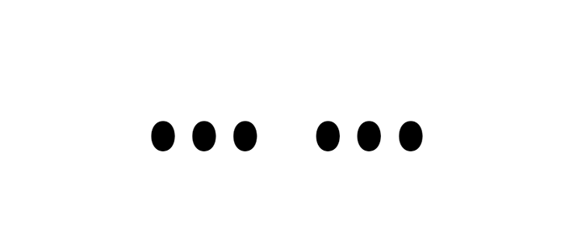

Toggle navigation
Yuxiang Qin
cv
research
links
Contact
Research (in press)
Suppressed growth of dark matter haloes during the Epoch of Reionization
Research (in press)
The small contribution of quasars to reionization
Research (in press)
AGN quenching of high redshift star formation in ZF-COSMOS-20115
Research (accepted)
Gas accretion, cooling and star formation in dwarf galaxies at high redshift
Research (internal review)
Star formation and feedback in dwarf galaxies at high redshift

Incomplete
Copyright © Yuxiang Qin